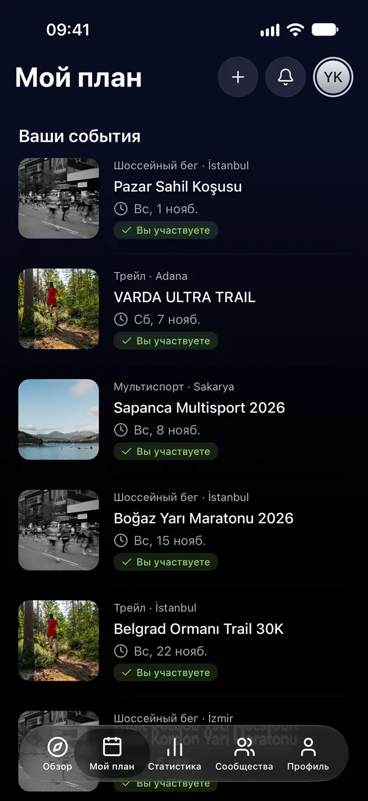
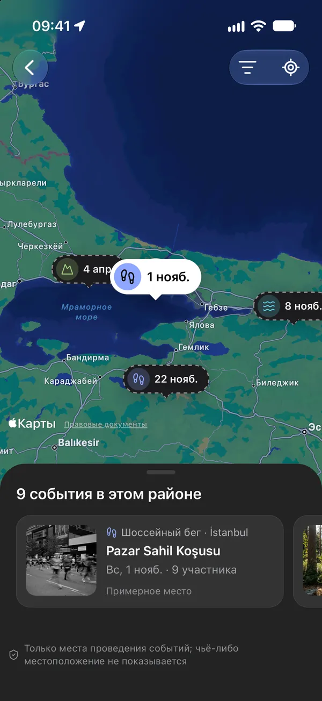
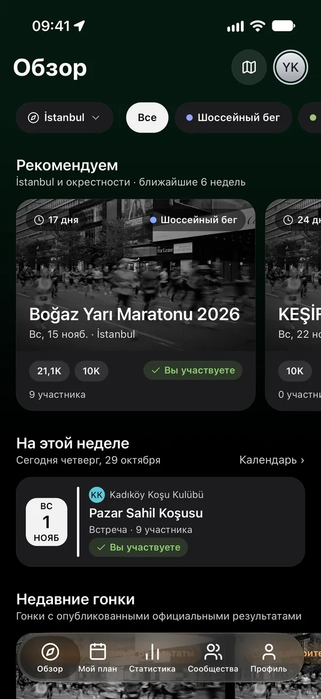
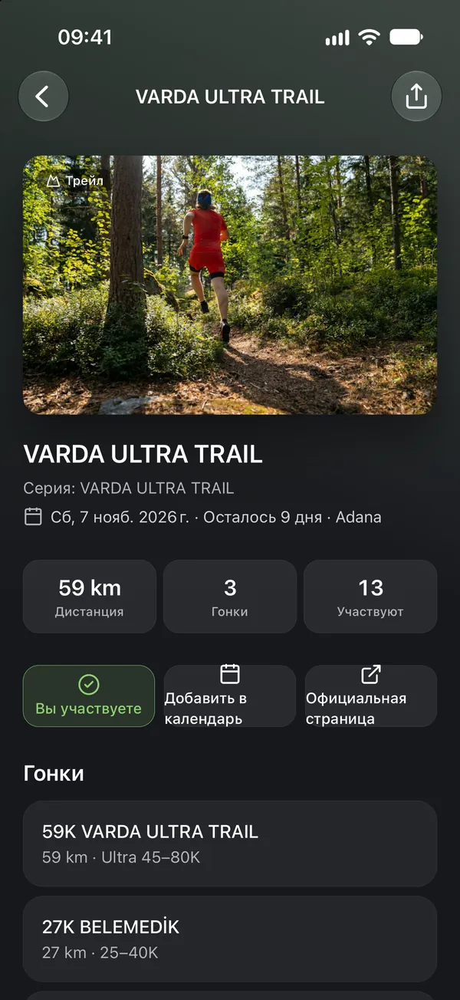
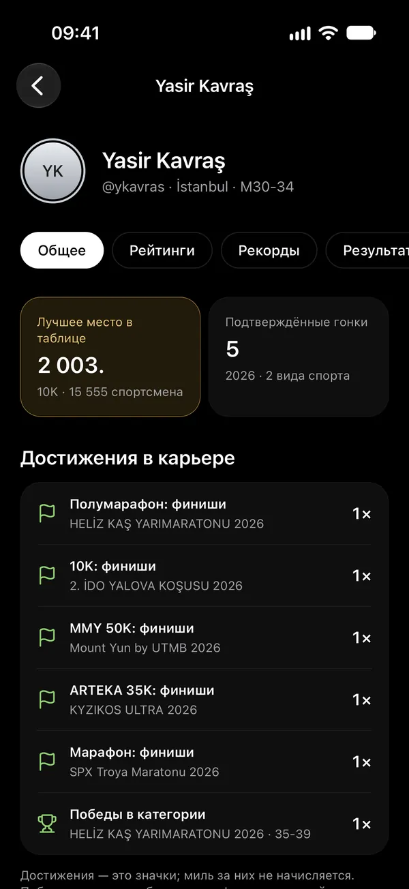
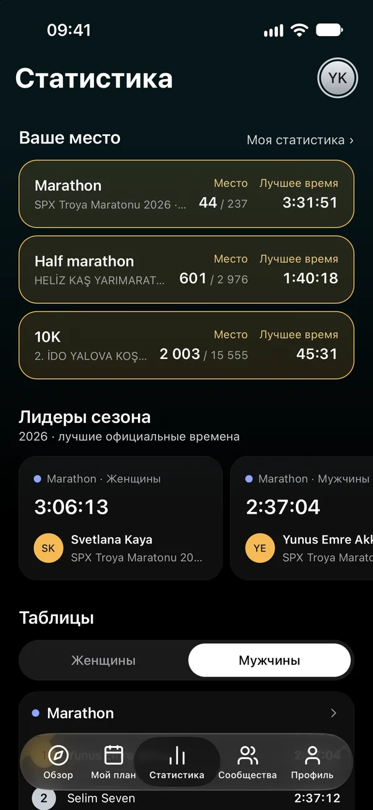
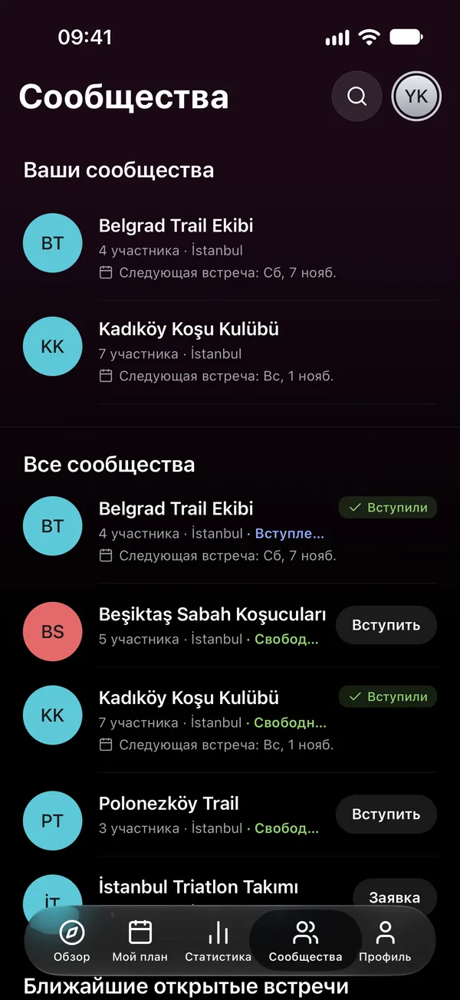

06Календарь
В вашем календаре — всегда актуально.
Добавьте событие в календарь одним касанием или подключите план к календарю телефона как живую подписку; если дата изменится, календарь обновится.

ШОССЕЙНЫЙ БЕГ · ТРЕЙЛ · HYROX · ТРИАТЛОН · ОТКРЫТАЯ ВОДА
Найдите свою гонку, стройте свою карьеру.
Бег, трейл, HYROX, триатлон и открытая вода: находите гонки и клубные встречи по городам и видам спорта. Смотрите, кто участвует, и пусть официальные результаты попадают в вашу карьеру.


01Обзор
Просматривайте гонки и клубные встречи по городам и видам спорта, а на карте событий — все сразу.


02Мой план
Нажмите «Участвую», и событие попадёт в ваш план. Смотрите, куда собираются люди, на которых вы подписаны, и решайте, кто видит ваш план.
Кто видит ваш план?

03Карьера
Результаты берутся из официального списка организатора. Выберите гонку, найдите свой результат и нажмите «Это я»; после одобрения он попадёт в вашу карьеру и личные рекорды.

04Статистика
Таблицы заполняются официальными результатами компаний хронометража, которые разрешают рейтинги. Смотрите лидеров сезона в своём виде спорта и формате и своё место среди них.

05Сообщества
Найдите свой клуб и вступите в него: его встречи появятся в разделе «Мой план», а ни одно объявление не пройдёт мимо. К открытым встречам можно присоединиться без членства в клубе.

06Календарь
Добавьте событие в календарь одним касанием или подключите план к календарю телефона как живую подписку; если дата изменится, календарь обновится.

07Подписки и уведомления
Подписывайтесь на бегунов и клубы. Узнавайте, когда меняется гонка из вашего плана, одобрен ваш результат или клуб публикует объявление.
Скачайте Raceport и начните планировать сезон.